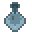

blood_iron_sash belt · #A06060blood_oath_seal seal · #C05050

bone_chill_pendant pendant · #88B0C0bone_reaper_tally talisman · #E0E0D0candle_of_the_dead bell · #90B080cavalry_sash belt · #B08860crimson_pact_charm pendant · #D04050dawn_blade_charm talisman · #F0C88Adawn_drum bell · #F0D8A0deathbed_talisman talisman · #E0E0C0diver_signet ring · #70B0B0dusk_raider_badge seal · #8070A0dusk_veil_charm pendant · #9080C8eclipse_bead bead · #8870B0edict_of_dragon seal · #E0C060edict_of_dread seal · #B08090edict_of_iron seal · #A8C0D8edict_of_loyalty seal · #E8D0A0edict_of_mandate seal · #F0D890edict_of_swift seal · #B8E0C0flesh_gamble_dice die · #E0A090